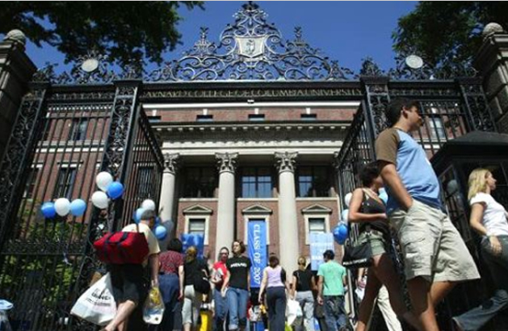
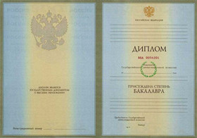
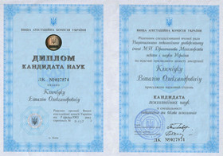

Currently, there are more than 1,600 higher education institutions in Russia, including public and private universities. All Russian higher education institutions currently implement a nationwide unified exam system. This program has not yet fully started targeting foreign students. In other words, Chinese students studying at Russian universities do not need the Russian unified exam. Before the preparatory course ends, they can participate in the university's entrance exam...

Currently, there are more than 1,600 higher education institutions in Russia, including public and private universities. All Russian higher education institutions currently implement a nationwide unified exam system. This program has not yet fully started targeting foreign students. In other words, Chinese students studying at Russian universities do not currently need the Russian unified exam. Before completing the preparatory course, they take the university's entrance exam, and after passing, they can enter their specialized studies.The preparatory final exam generally varies depending on the student's chosen major, with different subjects. For example: students applying for science and engineering must take math, physics, chemistry, etc.; those applying for liberal arts must test geography, history, national conditions, etc. Of course, whether it's literature or science, Russian is required, and the Russian exam is a must-pass main subject before entering professional studies.
Most Chinese students studying in Russia do not have a foundation in Russian, so they must first study a one-year or one-and-a-half-year Russian preparatory course, then proceed to specialized study, or a four-year undergraduate, two-year master's, or three-year doctoral program.
Nowadays, many top Russian universities offer majors taught in English. This way, as long as you meet the English admission requirements and pass the school's remote interview, you can directly enter the major.
Preparatory courses are necessary for Chinese students because proficiency in Russian is fundamental and key to entering a major and being able to understand the courses. Below are the basic admission requirements for various Russian universities:
General Universities (Comprehensive, Science and Engineering)
Undergraduate admission requirements
Age requirement: 17-35 years old
Educational requirements: Graduation from high school or equivalent secondary school (including vocational high school, secondary vocational school, technical school)
Language requirements:
Russian language instruction: No Russian language foundation requires one year of preparatory course; Holders of a first-class Russian certificate or preparatory course completion certificate can directly enter the department. English-taught courses: No English foundation requires one year of preparatory course; IELTS 5.5 or passing the school's self-administered language test allows direct admission.
Master's admission requirements

Education requirements: Bachelor's degree with a bachelor's degree;
Language requirements:
Russian language instruction: No Russian language foundation required, must complete one year of preparatory courses; Must hold a Russian Level 2 certificate or a preparatory course completion certificate;
English-taught courses: Candidates with an IELTS score of 5.5 or who pass the school's self-language test can directly enter the department.
PhD admission requirements

Educational requirements: Master's degree or expert degree (expert refers to a five-year expert diploma obtained at a local Russian university; Submit a summary of the master's thesis; Introduction to research achievements in the field, etc.
An entrance exam is required, covering professional knowledge and language
Language requirements:
Russian language instruction: No Russian foundation required, one year of preparatory course;
English-taught courses: IELTS score of 6 or passing a language test by a tutor is exempt from direct enrollment in the preparatory course.
An art university
Undergraduate admission requirements
Education requirements: Graduation from high school or equivalent secondary school (including vocational high school, secondary vocational school, technical school); Submit personal work.
Exam: An entrance exam is required. The exam is arranged after the preparatory language course ends, and students can start departmental studies upon passing.
Language requirements: No language foundation required, must complete one year of preparatory courses; Holders of a first-class Russian certificate or preparatory course completion certificate can directly enroll in the department.
Master's admission requirements
Education requirements: Bachelor's degree; Hold a bachelor's degree certificate; Submit personal works.
Language requirements: No language foundation required, must complete one year of preparatory course; Holders of a Russian language proficiency certificate or preparatory course completion certificate can be exempted from preparatory courses;
Exam: An entrance exam is required. Students can start departmental studies upon passing.
PhD admission requirements
Education requirement: Master's degree or expert degree
An entrance exam is required, covering professional knowledge and language
Exam: An entrance exam is required. Students can start departmental studies upon passing.
预科结业考试，一般根据学生所报的专业方向不同，考试科目也各不相同，比如：报理工科的学生要考数学、物理、化学等;报文科的要考：地理、历史、国情等，当然无论是报文报理都需要考俄语，俄语考试是进入专业学习必须要通过的一门主课。
大部分的中国学生去俄罗斯留学都没有俄语基础，这样一来，就必须先读一年或者一年半的俄语预科，然后再进入专业学习或者是四年本科或者是二年硕士或者是三年博士。
现如今，很多俄罗斯重点类大学都开设了英文授课的专业方向。这样一来，只要符合英语入学要求，并且通过学校的远程面试，就可以直接进入专业学习了。
预科针对中国学生是必要的，因为俄语掌握的好与坏是决定进入专业能够听懂课的根本和关键。以下是俄罗斯各类大学录取基本条件：
普通类大学（综合类、理工类)
本科录取条件年龄条件：17-35周岁
学历条件：高中或同等中等学历毕业(包括职高、中专、技校)
语言要求：
俄语授课：无俄语基础需读一年预科;有俄语一级证书或预科结业证可直接入系学习。 英语授课：无英语基础需读一年预科，有雅思5.5或者通过学校自行语言测试可直接入系。
硕士录取条件
学历要求：大学本科，具有学士学位证书;
语言要求：
俄语授课：无俄语基础需读一年预科;有俄语二级证书或预科结业证书;
英语授课：雅思成绩5.5或者通过学校自行语言测试者可直接入系。
博士录取条件
学历要求：硕士学历或专家学历(专家指在俄罗斯本土大学获得的5年制专家毕业证书;提交硕士毕业论文概要;关于本专业的科研成果介绍等。
需要入学考试，考试内容：专业知识，语言
语言要求：
俄语授课：无俄语基础需读一年预科;
英语授课：雅思6分或者通过导师语言测试者，免预科直读专业。
艺术类大学
本科录取条件
学历要求：高中或同等中等学历毕业(包括职高、中专、技校);提交个人作品。
考试：需要入学考试，在预科语言学习结束后安排考试，考试合格后入系学习。
语言要求：无语言基础需读一年预科;有俄语一级证书或预科结业证可直接入系学习。
硕士录取条件
学历要求：大学本科毕业;具有学士学位证书;提交个人作品。
语言要求：无语言基础需读一年预科;有俄语等级证书或预科结业证书可免预科;
考试：需要入学考试，考试合格后入系学习
博士录取条件
学历要求：硕士学历或专家学历
需要入学考试，考试内容：专业知识，语言
考试：需要入学考试，考试合格后入系学习
English edition. Select 中文原文 to compare with the original Chinese article.
This article is edited and published by Liaoning Overseas Study Service Co., Ltd. The content is for study abroad planning reference only. Unauthorized reproduction is prohibited.
Information on policies, regulations, admissions brochures, and program fees is timely. Please refer to the latest releases from official institutions and institutions in various countries; For detailed verification, please Contact an advisor。